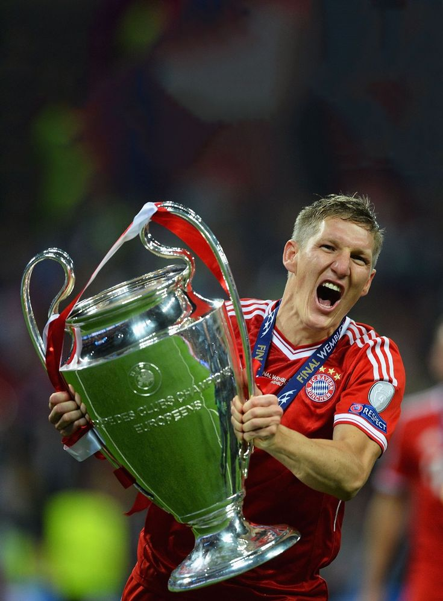

|
 |
 |
 |
 |
ประวัติลีค Bundesliga
บุนเดิสลีกา (เยอรมัน: Bundesliga; แปลตรงตัวว่า ลีกสหพันธรัฐ) เป็นระบบการแข่งขันฟุตบอลลีกสูงสุดของประเทศเยอรมนี เริ่มก่อตั้งเมื่อ ค.ศ. 1962 ที่เมืองดอร์ทมุนท์ และฤดูกาลแรกเริ่มต้นในปี ค.ศ. 1963 ซึ่งอยู่ภายใต้การบริหารของสมาคมฟุตบอลเยอรมัน บุนเดิสลีกาแบ่งเป็น 2 ลีก คือ "ลีก 1" (First Bundesliga) รู้จักกันทั่วไปในชื่อ "บุนเดิสลีกา" และ "ซไวเทอบุนเดิสลีกา" (Second Bundesliga) ซึ่งแยกออกมาจากลีก 1 เมื่อ ค.ศ. 1974 ในประเทศเยอรมนีมีแต่บุนเดิสลีกา 2 ลีกเท่านั้นที่เป็นลีกฟุตบอลอาชีพ บุนเดิสลีกาเป็นลีกฟุตบอลอาชีพในประเทศเยอรมนีที่มีผู้เข้าร่วมในสนามโดยเฉลี่ยต่อเกมสูงที่สุดในโลกในบรรดาลีกทั้งหมด บุนเดิสลีกาประกอบด้วยทีม 18 ทีม ฤดูกาลเริ่มตั้งแต่เดือนสิงหาคมถึงเดือนพฤษภาคม เกมส่วนใหญ่จะเล่นในวันเสาร์และอาทิตย์โดยมีเกมไม่กี่เกมที่เล่นในวันธรรมดา ทุกสโมสรใน Bundesliga มีสิทธิ์ได้เล่น เดเอ็ฟเบ-โพคาล ทีมที่คว้าแชมป์สูงสุดคือ ไบเอิร์นมิวนิก 32 สมัย โบรุสซีอาดอร์ทมุนท์ 5 สมัย โบรุสซีอาเมินเชินกลัทบัค 5 สมัย์

ผู้ทำประตูสูงสุดตลอดกาล |
|---|
1.Gerd Muller |
365 Goals |
6.Claudio Pizarro |
197 Goals |
|
|---|---|---|---|---|
2.Robert Lewandowski |
312 Goals |
7.Ulf Kirsten |
181 Goals |
|
3.Klaus Fischer |
268Goals |
8.Stefan Kuntz |
179 Goals |
|
4.Jupp Heynckes |
220 Goals |
9.Dieter Muller |
177 Goals |
|
5.Manfred Burgsmuller |
213 Goals |
10.Klaus Allofs |
177 Goals |
|
Higlight Bundesliga |
||||
|